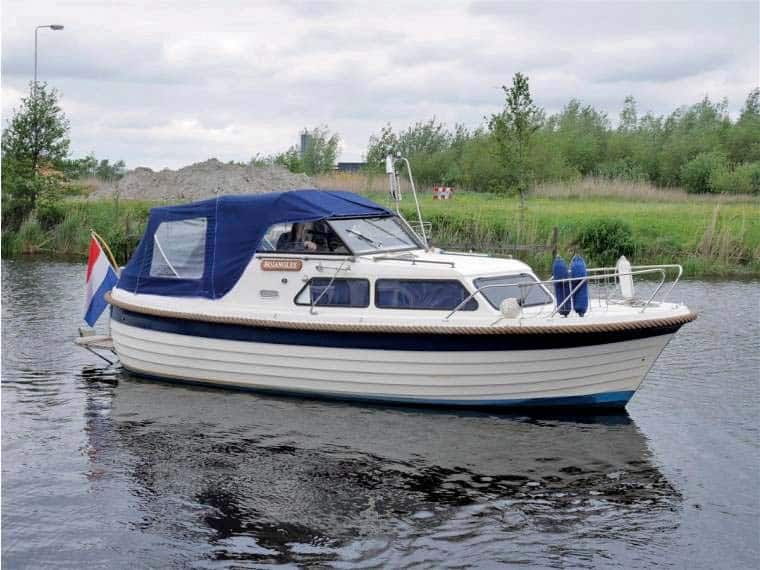

Windy 26 Snekke 26 SN / Norwegian Snekke
1981–1986
The Windy 26 SN is a Norwegian-built 26-foot hardtop pocket trawler/snekke from the early-to-mid 1980s. Its double-ended fiberglass hull combines a full-length skeg, aft bilge keels and single diesel shaft drive with a protected helm, large cockpit and compact overnight accommodation. Period testing emphasized unusually good stability, economical operation and easy low-speed handling for a boat of this size.

- LOA
- 25.43 ft
- LWL
- Unknown
- Beam
- 9.61 ft
- Draft
- 2.36 ft
- Hull behaviour
- Semi-Displacement
- Fuel
- Diesel
- Propulsion
- Shaft
- Engine configuration
- Single inboard diesel
- Boat family
- Trawler
- Construction
- Hand-laid fiberglass Norwegian-built hull with simulated lapstrake topsides, hard-chine/semi-displacement form, full-length skeg and molded bilge keels aft
Best for
- Couples wanting a small traditional diesel cruiser with Scandinavian character
- Great Lakes, river, canal and sheltered-coastal cruising
- Buyers prioritizing fuel economy, stability and protected shaft drive over speed
Trade-offs
- Compact accommodation and headroom are modest compared with newer 26-foot cruisers
- Cruising speed is primarily in the 7-10 knot range rather than modern planing-cruiser speeds
- Older European hardware and model-specific parts may require adaptation or specialist sourcing
Known concerns
- No model-specific concern has been promoted to B-Atlas’s evidence threshold. This does not mean the model has no age-, condition- or hull-specific risks.
Inspection focus
- Inspect Volvo diesel cooling, exhaust, mounts and service history
- Check shaft, stern gear, rudder, skeg and emergency-steering arrangement
- Inspect windows, hardtop and deck fittings for water intrusion
- Verify fuel, water and sanitation tanks and plumbing, which vary between examples
- Review aging electrical systems and owner modifications
Continue researching
Related boat models
25 ft · Displacement
24.5 ft · Displacement
26.75 ft · Semi-Displacement
27.92 ft · Semi-Displacement
29 ft · Displacement
30 ft · Displacement
About this record
B-Atlas preserves uncertainty: missing information remains unknown rather than being treated as a negative. Specifications and guidance describe the model record; individual boats can differ by year, equipment, refit and condition.